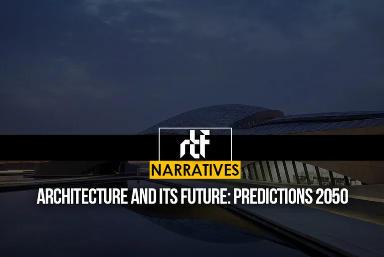
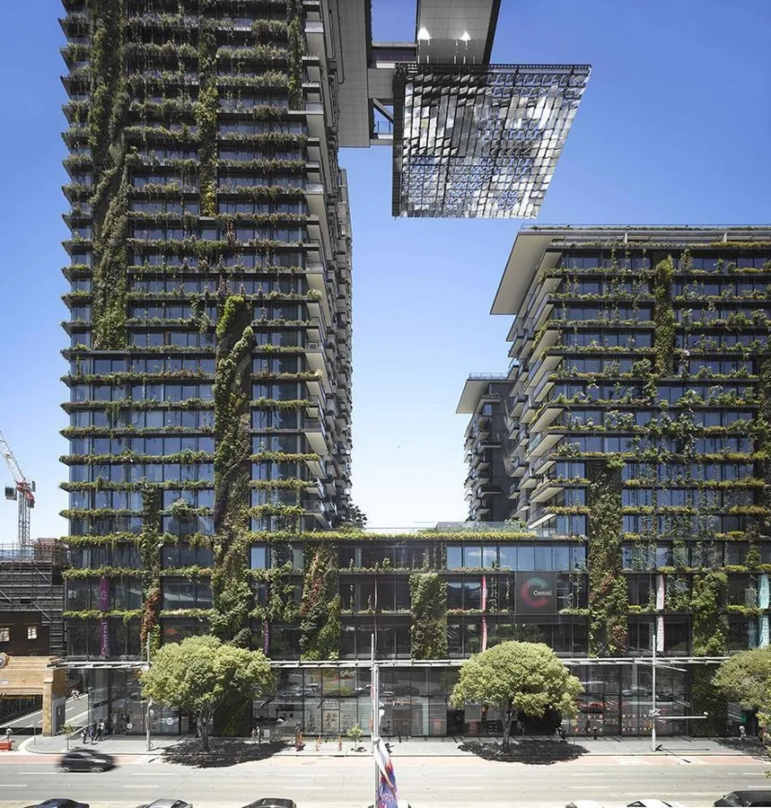
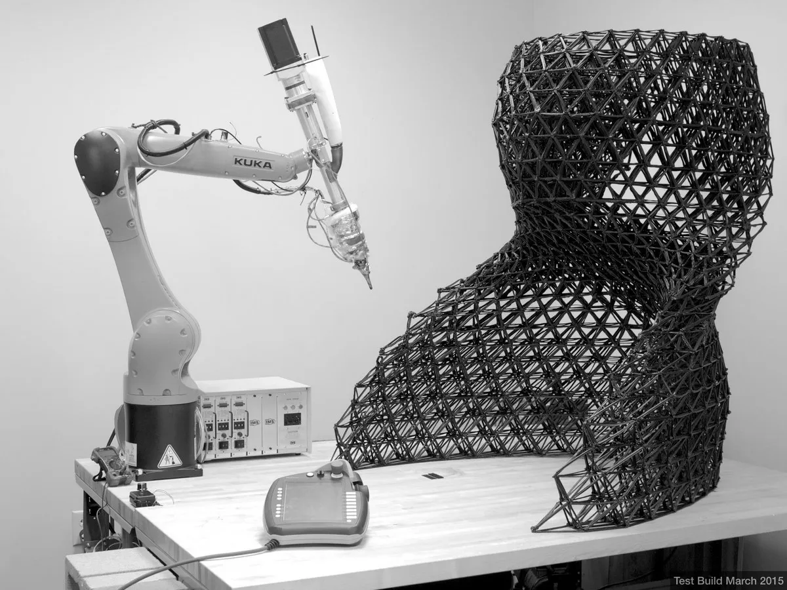
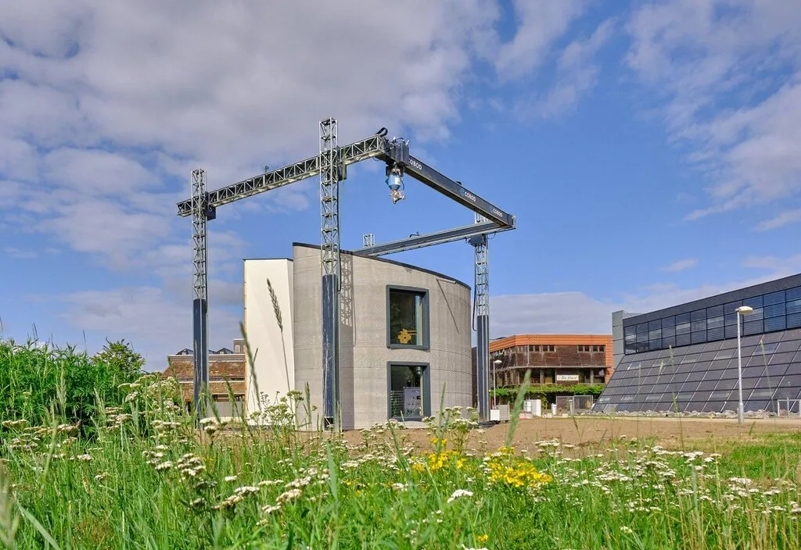

Architecture and its Future: Predictions 2050

Following a technology boom, all fields are hit by a curve. The impact on architecture was
moderate. From architecture to construction companies, AI took the area by storm. The
lesser-seen magic of BIM technology and the introduction of 3D-built houses are some to
be added. Even as futuristic designs and construction techniques emerge, it is essential to
notice their impact on sustainability, the environment, aesthetics, and other architectural
factors. Ultimately, architecture should create sustainable and functional buildings that
benefit people and the planet. Keeping that in mind, here are the predictions for 2050.
1.Sustainability and Green Design
Sustainability is often spoken about, from the choice of materials to energy efficiency to the possibility of being sustainable and cost-effective. Sustainability has been viewed not just as a construction method but rather as a way of living, thus leading several people on a path to sustainable construction.
The need for sustainability stems from the effect of concrete on our environment- the harmful amount of CO2 emissions, the use of up to 10% of industrial water and the claims of heat waves due to the urban heat island effect. Sustainability will not only tackle these issues but can also aid mental health and noise reduction. Sustainability will soon become the reason for several job employments as well.

2.Parametric Design and Digital Fabrication

Parametric Design has developed since Patrik Schumacher, director of Zaha Hadid Firms, introduced the world to it. He stated the importance of the algorithm and mathematical objectives towards shapes and designs.
Digital Fabrication is a fusion of technology and creativity, where computer-guided designs help architects develop through the stages of exploration, prototyping, mass production and construction. There are many layers to digital fabrication, but the typical falls under additive and subtractive. The additive will include 3D printing, an upcoming technology that requires its subtopic due to its vast depth and recent applications. Subtractive digital fabrication is mainly adopted for precise tasks, such as carving, etching or repairing intricate structural components. Digital fabrication has hence provided unparalleled accuracy and efficiency to time.
3. 3D Printing in Construction
3D printing in construction is being pursued as a game-changing technology in architecture. With its fast development and flexibility, 3D-printed structures have advantages and disadvantages. While the ability to design complex and intricate designs now in the hands of the architect proves to be a winning statement, the need for more awareness and adequate knowledge towards the field leads to fewer projects and slower development.
As 3D printing is far more sustainable than traditional construction and allows precision, the use of 3D printing in the construction of residences was the first to come. Several estimates state that 3D printing technology generates much lower waste, as low as 60%, than average construction sites. On the other hand, 3D printing is relatively expensive, is a niche skill, and requires several elements, such as unique materials.

Conclusion

The story continues; there are several other technologies and construction techniques, but these provide the basis for the future of architecture as a field of study and construction. Prefabrication, 3D Volumetric Construction, and different materials such as self-healing concrete, transparent aluminum, and permeable concrete are some to pique your interest towards the endless possibilities.
As we actively study the history of architecture, the future and the upcoming have been left for the architecture fraternity to work on. It should be their responsibility as institutions of impact to hold lectures or webinars indicating the need for newer software, construction techniques and materials that can not only help the country’s economic development for the future but can also solve more significant problems like affordability and lack of functional spaces in overpopulated nations as well as solving several other problems by the predicted year, 2050.